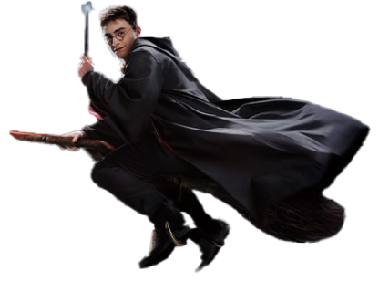
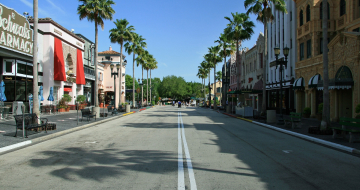
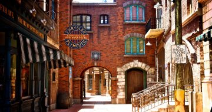

A B O U T
It's a New Way to Play !
Universal Studios stands as an unrivaled entertainment juggernaut, boasting a storied legacy and an illustrious tradition of crafting cinematic masterpieces and captivating television programs that have left an indelible mark on audiences worldwide. Through their cinematic endeavors, they've not only entertained but also stirred the hearts and minds of countless individuals, weaving stories that transcend time and culture. And now, you have the extraordinary opportunity to step into the realms of imagination and experience these iconic creations come to life before your very eyes. At the heart of Universal Studios lies a dedication to plunging visitors into the captivating world of film and television. From the moment you step foot into the park, you're invited on a journey through the annals of cinematic history, where every corner holds the promise of adventure and discovery.
Each visit promises a unique and unforgettable experience, making it a must-visit destination for fans of all ages. But Universal Studios is more than just a homage to the silver screen; it's a playground of boundless excitement and wonder. From beloved animated characters to breathtaking spectacles, the park's attractions cater to every taste and age group, ensuring there's something for everyone to enjoy. It's a place where families can come together to create cherished memories, where friends can unleash their inner adventurers, and where dreams are transformed into reality.
Movies
Universal’s first overwhelmingly successful film wa All Quiet on the Western Front (1930), which won Academy Awards for best picture and for best director in 1930. The studio then launched a foray into the horror field, producing well-known films such as Frankenstein (1931) and Dracula (1931). In the 1940s Universal produced numerous films featuring the comedic duo Abbott and Costello. The early 1960s brought the studio box-office success with the Academy-Award winning films Spartacus (1960) and To Kill a Mockingbird (1962) and with the comedies of Doris Day and Rock Hudson.
Beginning in the 1970s Universal began to offer a more diverse collection of films, sometimes in collaboration with other companies. These movies included the comedies The Sting (1973) and Animal House (1978), the thrillers Jaws (1975) and Jurassic Park (1993), the family films E.T. (1982) and Back to the Future (1985), and the dramas Out of Africa (1985), Scent of a Woman (1992), and Schindler’s List (1993). In the early 21st century Universal continued to produce and distribute popular films. Movies from this era included Meet the Parents (2000) and its sequels, The Fast and the Furious (2001) and its sequels, the Bourne movies (2002 and later), and the animated comedies Despicable Me (2010) and its sequels.

Theme Parks
Universal Studios is also known for a number of theme parks that highlight its movie and television productions. In addition to being a working studio, Universal Studios Hollywood includes rides and attractions and offers tours of various television and film sets. It was damaged by fires in 1990 and 2008; the latter destroyed two square blocks of the studio lot as well as its popular King Kong attraction. Universal Orlando Resort in Florida features the Universal Studios and Islands of Adventure theme parks. The latter includes the Wizarding World of Harry Potter, an attraction based on J.K. Rowling’s popular book series. Other Universal Studios theme parks are located in Osaka, Japan, and in Singapore.
With each park, Universal Studios continues to innovate and provide visitors with thrilling experiences that bring the magic of movies and television to life. From adrenaline-pumping rides to behind-the-scenes studio tours, Universal Studios theme parks offer something for everyone, making them top destinations for entertainment around the world.
-
- hollywood
- Orlando
- Japan
- Singapore
- Beijing
-
Located in the entertainment capital of the world, Universal Studios Hollywood is not just a theme park but a working film and television studio. Visitors can enjoy a variety of rides and attractions inspired by blockbuster films and TV shows, such as the adrenaline-pumping "Jurassic World - The Ride" and the magical "The Wizarding World of Harry Potter." The famous Studio Tour gives guests an exclusive look at real sets and soundstages where Hollywood movies are made.
 